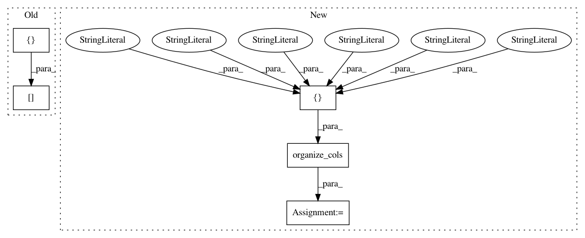

27516f9a7f48a540fd33354b92fde425885fdc14,pudl/outputs.py,,generators_eia860,#Any#,370
Before Change
out_df = out_df.drop(cols_to_drop, axis=1)
// Re-arrange the dataframe to be more readable:
out_df = out_df[[
"report_year",
"operator_id",
"util_id_pudl",
"operator_name",
"plant_id",
"plant_id_pudl",
"plant_name",
"generator_id",
"state",
"county",
"latitude",
"longitude",
"prime_mover",
"unit_code",
"status",
"ownership",
"duct_burners",
"nameplate_capacity_mw",
"summer_capacity_mw",
"winter_capacity_mw",
"operating_date",
"energy_source_1",
"energy_source_2",
"energy_source_3",
"energy_source_4",
"energy_source_5",
"energy_source_6",
"multiple_fuels",
"deliver_power_transgrid",
"syncronized_transmission_grid",
"turbines",
"cogenerator",
"sector_name",
"sector",
"topping_bottoming",
"planned_modifications",
"planned_net_summer_capacity_uprate",
"planned_net_winter_capacity_uprate",
"planned_uprate_date",
"planned_net_summer_capacity_derate",
"planned_net_winter_capacity_derate",
"planned_derate_date",
"planned_new_prime_mover",
"planned_energy_source_1",
"planned_repower_date",
"other_planned_modifications",
"other_modifications_date",
"planned_retirement_date",
"solid_fuel_gasification",
"pulverized_coal_tech",
"fluidized_bed_tech",
"subcritical_tech",
"supercritical_tech",
"ultrasupercritical_tech",
"carbon_capture",
"startup_source_1",
"startup_source_2",
"startup_source_3",
"startup_source_4",
"technology",
"turbines_inverters_hydrokinetics",
"time_cold_shutdown_full_load",
"stoker_tech",
"other_combustion_tech",
"planned_new_nameplate_capacity_mw",
"cofire_fuels",
"switch_oil_gas",
"heat_bypass_recovery",
"rto_iso_lmp_node",
"rto_iso_location_wholesale_reporting",
"nameplate_power_factor",
"minimum_load_mw",
"uprate_derate_during_year",
"uprate_derate_completed_date",
"associated_combined_heat_power",
"original_planned_operating_date",
"current_planned_operating_date",
"summer_estimated_capability",
"winter_estimated_capability",
"operating_switch",
"previously_canceled",
"retirement_date",
]]
return(out_df)
After Change
cols_to_drop = ["id", ]
out_df = out_df.drop(cols_to_drop, axis=1)
first_cols = [
"report_year",
"plant_id",
"plant_id_pudl",
"plant_name",
"operator_id",
"util_id_pudl",
"operator_name",
"generator_id",
]
// Re-arrange the columns for easier readability:
out_df = organize_cols(out_df, first_cols)
return(out_df)
In pattern: SUPERPATTERN
Frequency: 4
Non-data size: 5
Instances
Project Name: catalyst-cooperative/pudl
Commit Name: 27516f9a7f48a540fd33354b92fde425885fdc14
Time: 2017-10-03
Author: zane.selvans@catalyst.coop
File Name: pudl/outputs.py
Class Name:
Method Name: generators_eia860
Project Name: catalyst-cooperative/pudl
Commit Name: 27516f9a7f48a540fd33354b92fde425885fdc14
Time: 2017-10-03
Author: zane.selvans@catalyst.coop
File Name: pudl/outputs.py
Class Name:
Method Name: plants_steam_ferc1
Project Name: catalyst-cooperative/pudl
Commit Name: 27516f9a7f48a540fd33354b92fde425885fdc14
Time: 2017-10-03
Author: zane.selvans@catalyst.coop
File Name: pudl/outputs.py
Class Name:
Method Name: generation_fuel_eia923
Project Name: catalyst-cooperative/pudl
Commit Name: 27516f9a7f48a540fd33354b92fde425885fdc14
Time: 2017-10-03
Author: zane.selvans@catalyst.coop
File Name: pudl/outputs.py
Class Name:
Method Name: fuel_ferc1